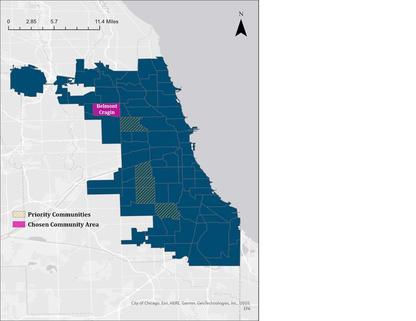
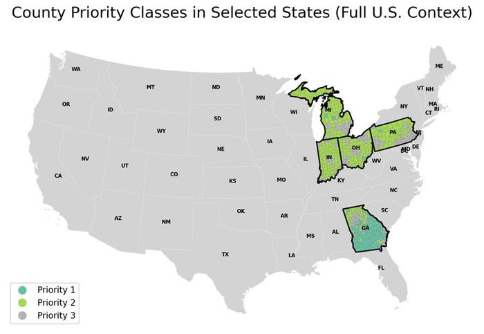
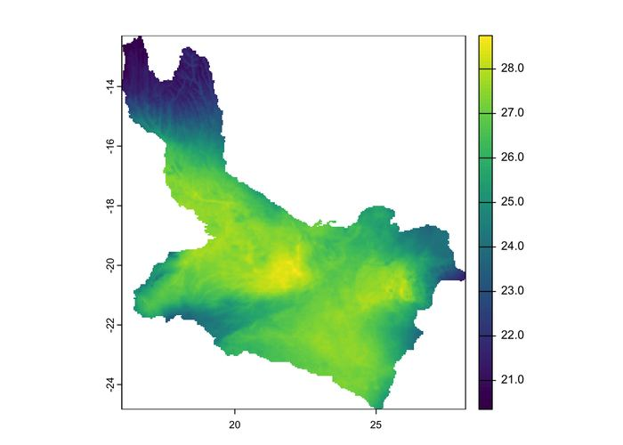

Yale School of the Environment
Projects

Fleet Decarbonization Roadmap - BrandSafway - EDF Climate Corps
Developed a data-driven roadmap to reduce fuel consumption and GHG emissions across BrandSafway's North American fleet. Quantified ~$1.5M in potential cost avoidance and up to 3,400 MT CO₂ through behavioral, organizational, and technology analysis of telematics data.

Chicago Solar Suitability Analysis
GIS-based analysis identifying the most solar-suitable neighborhoods in Chicago using rooftop potential, grid infrastructure, and demographic data. Found Belmont Cragin as the highest-priority corridor.

Solar Energy Equity & Data Science
County-level analysis identifying where high energy burden and solar potential overlap across the U.S., combining k-means clustering with spatial autocorrelation to understand patterns in solar adoption and socioeconomic need.

Mapping Methane Across the Okavango Delta
Used global FLUXNET tower data to train a Random Forest model predicting wetland methane emissions, then applied it spatially to map seasonal flux patterns across the Okavango Delta, one of Africa's largest and most carbon-significant wetland ecosystems.